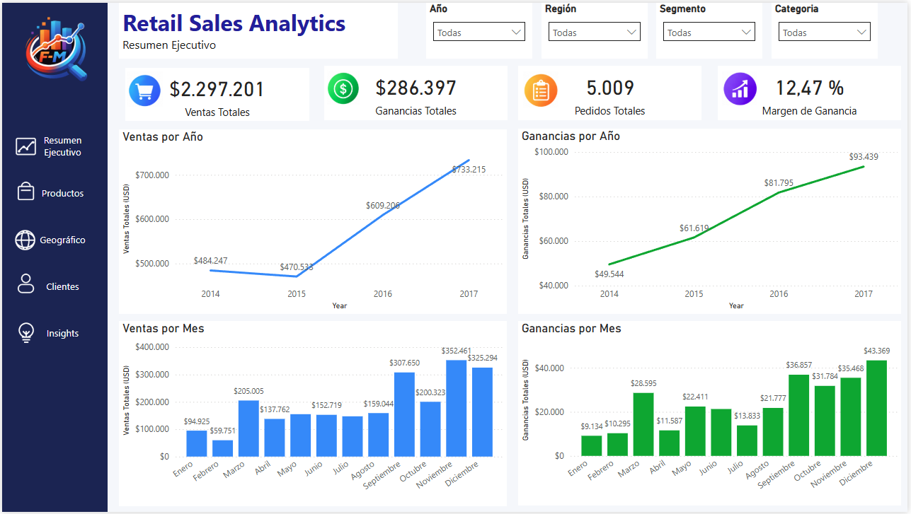
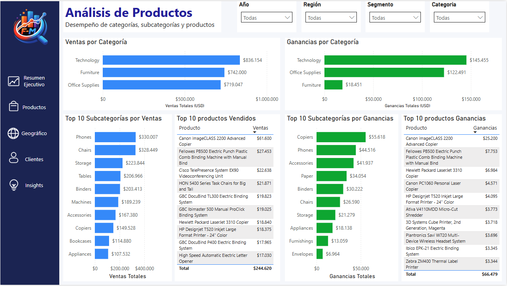
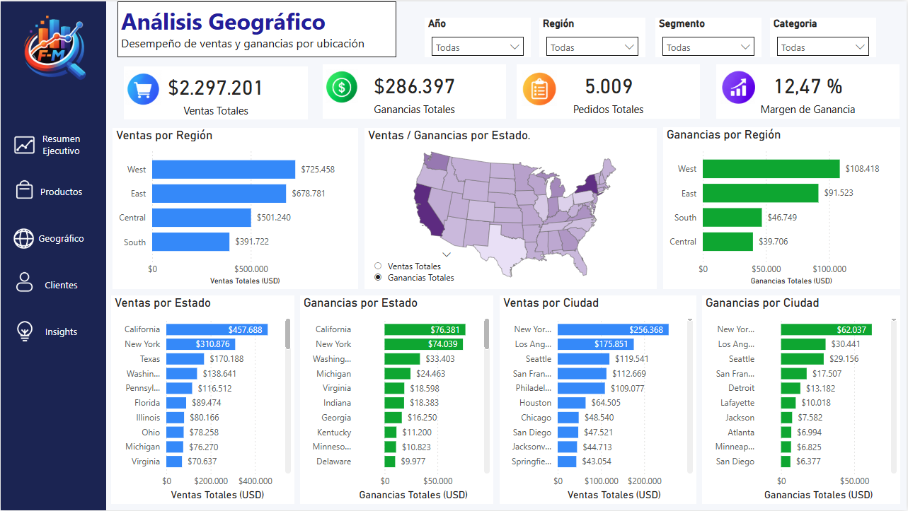
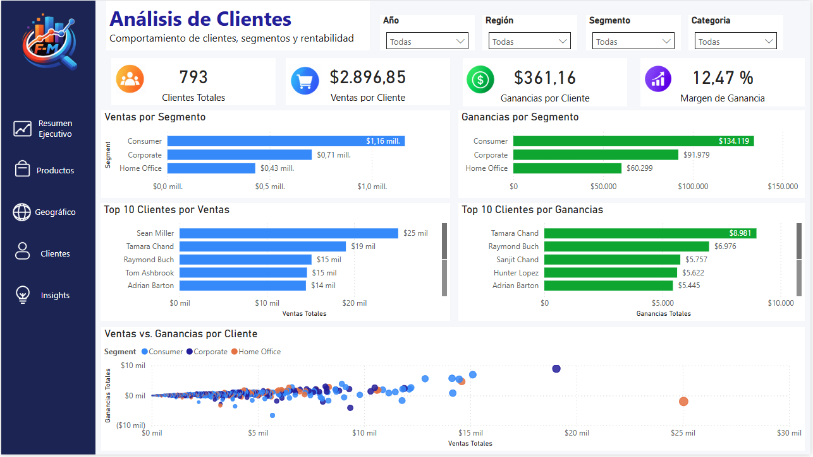
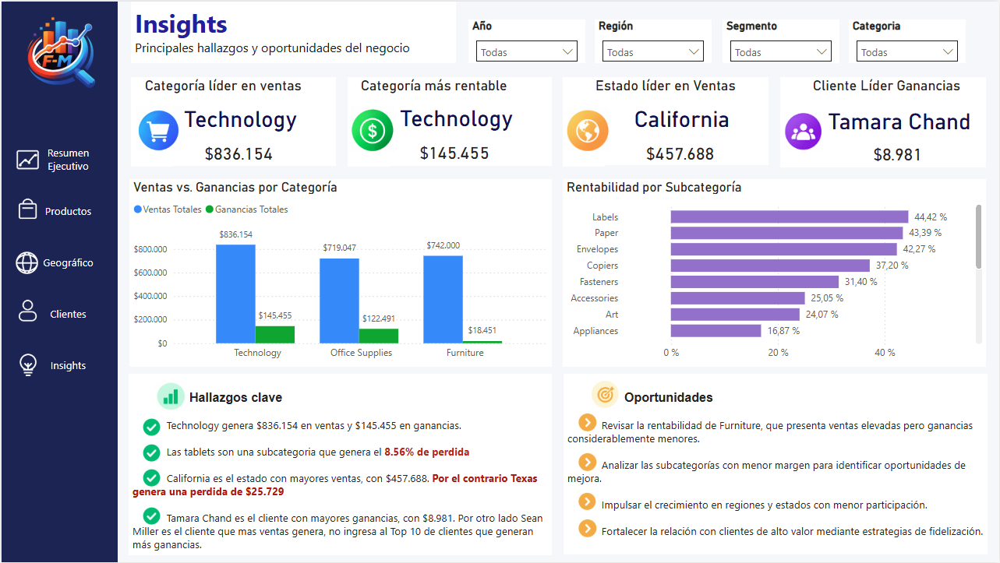
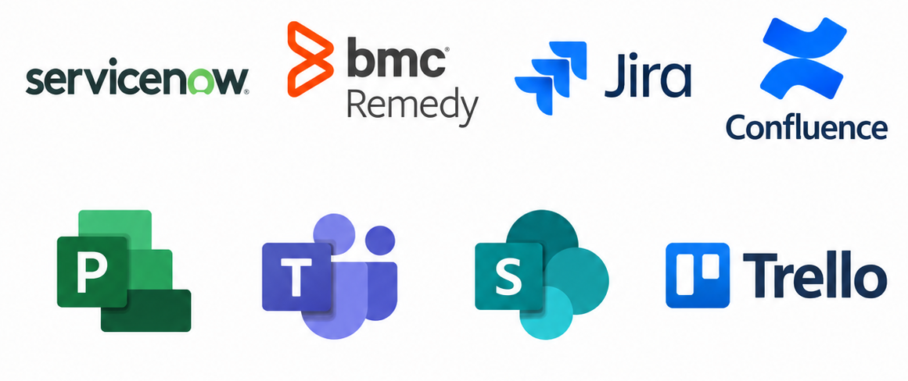
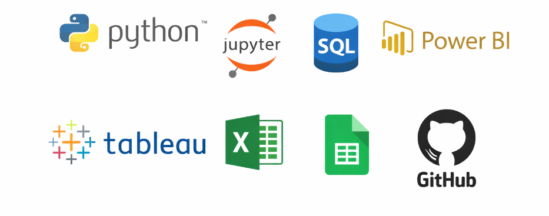

PROYECTOS
Proyectos personales

Análisis de Abandono de Clientes
Exploratory Data Analysis (EDA) to identify churn patterns, key drivers, and high-risk customer segments to support retention strategies.
Ver proyecto




Análisis de Ventas Minoristas
Exploratory Data Analysis (EDA) of over 9,900 retail sales records to identify sales patterns, profitability, customer segments, regional performance, and temporal trends using Python.
Ver proyectoAnálisis del Rendimiento de la Red Móvil
Simulation of a mobile network using 100,000 call records from a company, generated with Python to analyze traffic, KPIs, network congestion and failures.
Ver proyectoAnálisis de una Tienda de Alimentos en Línea
Data analysis of an online grocery store to identify purchasing patterns, top-selling products, and customer behavior.
Ver proyectoProyectos del bootcamp
Análisis de un Centro de Llamadas
Analysis of call center operators to identify inefficiencies in missed calls, waiting times, and overall call handling performance.
Ver proyectoAnálisis de una Tienda de Videojuegos
Exploratory analysis of video game sales data to identify success patterns, popular genres, and the most profitable platforms.
Ver proyectoAnálisis de Viajes en Taxi
Exploratory analysis of taxi trip data to identify demand patterns, peak activity hours, and the most frequently visited areas.
Ver proyectoProyectos de Power BI y Tableau
Análisis de Ventas Minoristas
Análisis exploratorio de datos (EDA) de más de 9.900 registros de ventas minoristas de 2014 a 2017. El análisis mostró un crecimiento sostenido en ventas y ganancias, con 2017 como el año de mejor desempeño, mientras que Tecnología fue la categoría líder. La región Oeste registró el mayor desempeño y el segmento Consumidor representó la mayor proporción de ventas y ganancias. También se identificó estacionalidad hacia el final del año, con noviembre como el mes más destacado.
Análisis del Rendimiento de la Red Móvil
Simulación y análisis exploratorio de más de 99.000 registros de llamadas móviles utilizando Python para evaluar el rendimiento de la red y la calidad del servicio. El análisis comparó las tecnologías 3G, 4G y 5G mediante KPI clave de telecomunicaciones, incluyendo CSSR, tasa de llamadas caídas y tasa de congestión. 5G alcanzó la mayor tasa de llamadas exitosas (84,97 %), mientras que 3G presentó mayores niveles de llamadas caídas y congestión. El proyecto también exploró el tráfico de llamadas, la utilización de estaciones base y el rendimiento de la red para apoyar el monitoreo y el análisis basado en datos.

Análisis de un Centro de Llamadas
Análisis exploratorio de datos (EDA) de más de 53.900 registros de llamadas del servicio de telefonía virtual CallMeMaybe para identificar operadores ineficientes a partir de las llamadas perdidas, los tiempos de espera y la actividad de llamadas salientes. El análisis clasificó 177 operadores como ineficientes y 113 como eficientes, utilizando métricas comparativas de desempeño y umbrales estadísticos. Las pruebas U de Mann–Whitney confirmaron diferencias estadísticamente significativas en el tiempo promedio de espera y las tasas de llamadas perdidas entre ambos grupos. Los resultados respaldan la capacitación focalizada, la redistribución de cargas de trabajo y las mejoras operativas.

